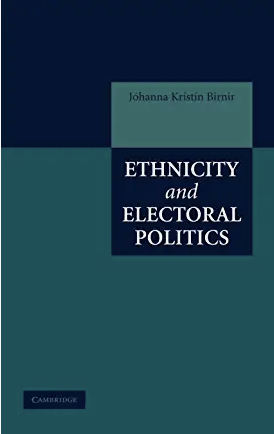

CV
I study the effect of identity (ethnicity, religion, gender) on contentious political outcomes (elections and violence), and I have done extensive fieldwork in the Andes, South-East Europe and Indonesia. Below you can find some more information about my published work and work in progress.
Monographs
| Alternatives in Mobilization: Ethnicity, Religion and Political Conflict. 2022. Cambridge University Press (with Nil Satana) examines the relationship between identity (ethnicity and religion) and minorityviolent and peaceful political mobilization. |
|  | Ethnic Electoral Politics. 2007. Cambridge University Press examines the relationship between political access and minority strategic choice of peaceful electoral participation, protest or violence against the state. |
Edited Volumes
| Ethnic Politics and Conflict/Violence: State of the Field and New Directions. 2018. Routledge. (with Forsberg and Davenport) synthesizes what the field does and does not know with regard to ethnic conflict, and outlines some research directions for the future. |
Articles
Locking Down Violence: The COVID-19 Pandemic’s Impact on Non-State Actor Violence. 2023. (With Brancati and Idlbi) The American Political Science Review.
See also:
The Politics of Co-optation: Ethnopolitical Minority Organizations and Authoritarian Elections in the Middle East. 2021.(With Agatha Hultquist and Victor Asal). Ethnopolitics. 20(2): 216-243.
Cultural Imprinting, Institutions, and the Organization of New Firms.. 2018. (With David Waguespack and Eric Dunford). Strategy Science.
See also:
- Harvard Business Review: Research: Where a Founder Is from Affects How They Structure Their Company.
Voting in the Shadow of Violence: Violence and Electoral Politics in Peru. 2018. (With Anita Gohdes). Journal of Global Security Studies. 3(2): 181–197.
See also:
Introducing the AMAR (All Minorities at Risk Data. 2018. (With David Laitin; Jonathan Wilkenfeld; David Waguespack; Agatha Hultquist; Ted Gurr). Journal of Conflict Resolution. 62(1):203-226.
Ethnicity and Conflict. 2017.(Guest editor special issue on the state of the field with Erika Forsberg and Christian Davenport), Ethnopolitics. 16(1).
See also:
Socially Relevant Ethnic Groups, Ethnic Structure and AMAR. 2015. (with Jonathan Wilkenfeld, James Fearon, David Laitin, Ted Gurr, Stephen Saideman, Dawn Brancati, Amy Pate and Agatha Hultquist.) Journal of Peace Research. 52:105-109.
A Voice in the Process: A Cross-national Look at Ethnic Inclusion and Economic Growth in the World. 2014. (with Eric Dunford). Development. 57(2):55-64.
Religion and Coalition Politics. 2013 (With Nil Seda Şatana.) Comparative Political Studies. 46(1):3-30.
Religion, Government Coalitions and Terrorism. 2013. (With Nil Seda Şatana and Molly Inman). Special Issue on Violence, Elections, and Party Politics. Terrorism and Political Violence. 25(1):29-52.
Economic Policy and Relevant Ethnic Groups. 2011 (With David Waguespack). Party Politics. 17(2): 243-260.
Where are the Disgruntled Voters? Testing the Voter-Parties Relationship Implication of the Cartel Party Model. 2010 Party Politics. Vol. 16(1): 29-49.
Divergence in Diversity? The Dissimilar Effects of Cleavages on Electoral Politics in New Democracies. 2007. American Journal of Political Science. 51(3):602-619.
Disunity in Diversity: Party System Fragmentation and the Dynamic Effect of Ethnic Heterogeneity on Latin American Legislatures. 2007. (With Donna Lee Van Cott). Latin American Research Review. Vol. 42(1):97-123.
Public Venture Capital and Party Institutionalization. 2005. Comparative Political Studies. 38(8):915-938.
Technological Development and Political Stability: Patenting In Latin America and the Caribbean. 2005. (with David M. Waguespack and Jeff Schroeder). Research Policy. 34(10):1570-1590.
Foreignness and the Diffusion of Ideas. 2005. (With David M. Waguespack). Journal of Engineering and Technology Management. 22(1-2):31-50.
Stabilizing Party Systems and Excluding Segments of Society? The Effects of Formation Costs on Representation in Latin America. 2004. Studies in Comparative International Development. 39(3):3-28.
Work in progress
Book ms
Intersectional identity: Ethnicity, religion and gender.
Papers
“Gender effects in online interactions: Results from a large-scale natural experiment.” (with Tristan Botelho and David Waguespack) Under review.
“AMAR and the Machine: Assisted Text Analysis for Coding of Cross-Sectional Time Series Data.” (with Henry Overos, Roman Hlatky, Ojashwi Pathak, *Jordan Dewar, Keith Padraic Chew, Amy H. Liu, and Ernesto Calvo.) ilcss working paper. Under review.
“Gender and violence in a virtual world.” (with David Waguespack and *Eric Dunford). ilcss working paper.
“Geo-AMAR and ethnic group territorial concentration.” (with *Pavel CoronadoCastellanos). Working paper.
“Gender across the world: Indonesia” (with David Waguespack and *Henry Overos). Data collection in progress.
Funding proposals
“Studies in Comparative Anti-Racism (SCAR)”. With CoPIs: Ernesto Calvo (U. of Maryland), Marcus Johnson (U. of Maryland), Margrét Bjarnadóttir (U. Of Maryland), David Waguespack (U. of Maryland). Christian Davenport (U. of Michigan), Amy Liu (UT. Austin), Eric McDaniel (UT. Austin), Clarence Lusane (Howard U.).